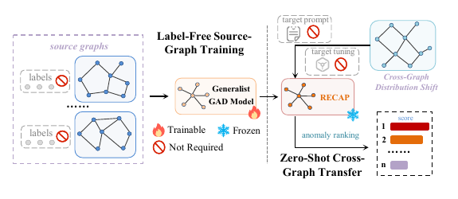
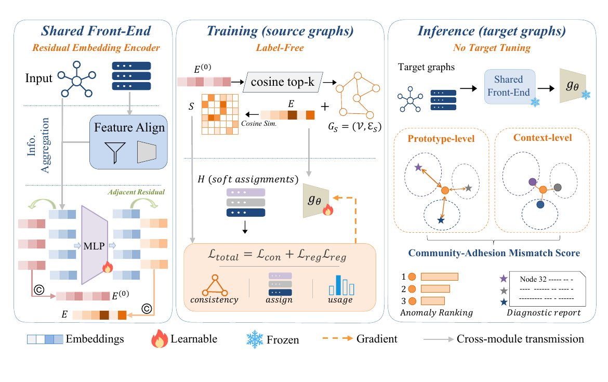
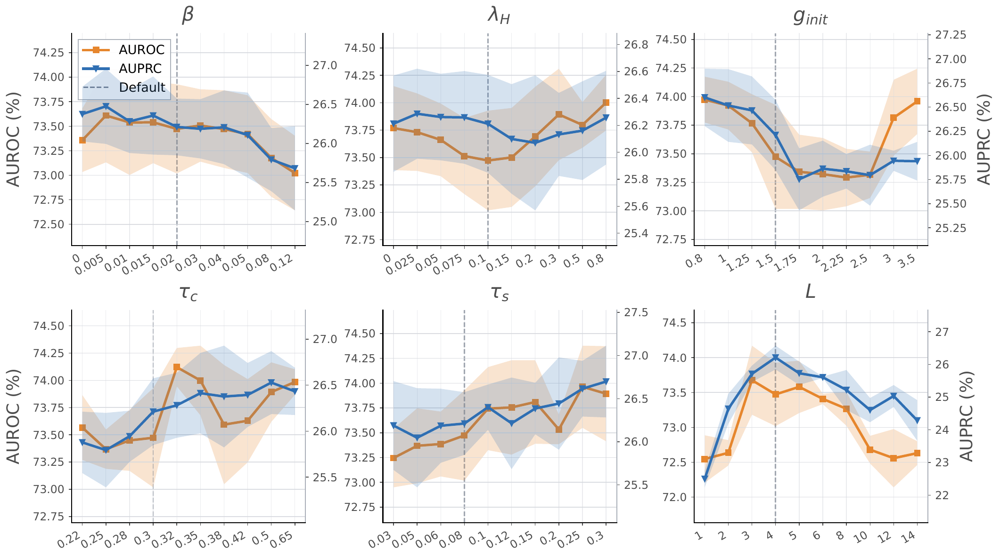
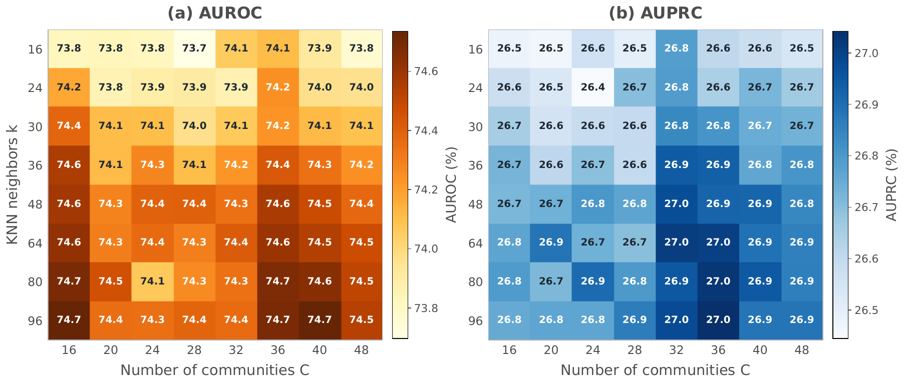
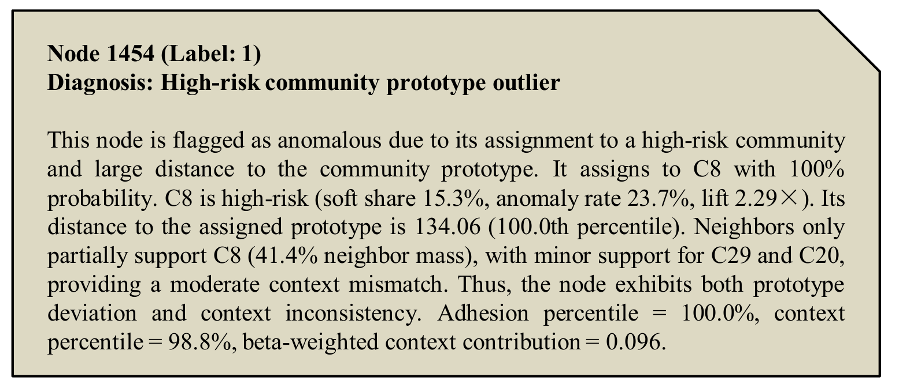

01
把对象看成图
用户、商品或论文是节点，关注、交易、评论或引用是节点之间的边。
Nodes + relations图异常检测能否从若干无标签源图中学习一次，就直接部署到结构、特征和异常语义都不同的新图？RECAP 正面回答这个现实部署问题。
在社交、交易或电商网络中，节点不是孤立样本。一个账户是否异常，既取决于它自身的属性，也取决于它与周围节点的连接和行为是否协调。
用户、商品或论文是节点，关注、交易、评论或引用是节点之间的边。
Nodes + relations数值偏高未必异常；真正有风险的往往是与相似邻居和局部关系明显不一致。
Local mismatch模型需要将最可疑的少数节点排在前面，让人工审核优先检查。
Anomaly ranking目标图缺少可靠标签，数据分布还在持续变化；逐图标注与微调难以跟上实际部署。
异常少，确认成本高。
历史标签难覆盖新风险。
重复标注与调参拖慢部署。
我们定义了更严格的 label-free generalist GAD：从多张无标签源图学习一次，面对未见目标图时冻结模型，不需要目标标签、少样本提示、参考节点或微调，直接输出异常排序。

标签稀缺且可能有噪声。
Source supervision样本质量与覆盖难保证。
Few-shot quality每张新图都需要重调。
Target adaptation不迁移源图的正常/异常语义，而是迁移“如何组织节点局部偏离”的规则。
训练阶段只从无标签源图学习残差模式与软社区结构；迁移到目标图时冻结模型参数，用目标图的无标签属性和拓扑重新估计社区原型并计算异常分数，全程不需要目标侧提示或微调。

实验先回答“能否在不同目标图上保持异常排序”，再用消融、参数分析和节点案例解释“性能来自哪里、结论是否稳定、分数能否被追溯”。
只比较目标侧同为零提示、零参考节点、零微调的方法。UNPrompt 与 AnomalyGFM-ZS 使用源标签，而 RECAP 连源标签也不需要；结果为数据集宏平均 AUROC / AUPRC（%）。
| Method | Source labels | Target context | Setting A | Setting B | Setting C |
|---|---|---|---|---|---|
| UNPrompt | Yes | None | 58.02 / 10.22 | 57.92 / 11.69 | 59.25 / 11.37 |
| AnomalyGFM-ZS | Yes | None | 53.07 / 8.02 | 49.64 / 8.43 | 51.03 / 5.57 |
| RECAP-OFA | No | None | 74.65 / 27.04 | 67.75 / 21.98 | 67.31 / 17.50 |
所有方法共享相同的特征对齐与多跳残差表示，再接入不同的无监督检测器；结果为八个目标图平均值（%，5 个随机种子）。
| Method | AUROC | AUPRC |
|---|---|---|
| RECAP | 74.47 ± 0.24 | 26.62 ± 0.58 |
| Residual + KMeans | 67.82 ± 0.34 | 18.23 ± 0.45 |
| Residual + GMM | 66.14 ± 0.43 | 17.57 ± 0.46 |
| Residual + LOF | 58.92 ± 0.00 | 15.13 ± 0.00 |
| Residual + Spectral Clustering | 52.15 ± 0.70 | 8.71 ± 0.30 |
逐项移除 RECAP 组件并在八个目标图上取平均（%，5 个随机种子），完整模型取得最高 AUROC 与 AUPRC。
| Method | ||
|---|---|---|
| RECAP | 74.48 ± 0.25 | 26.58 ± 0.57 |
| w/o Context Score | 73.16 ± 0.19 | 26.15 ± 0.54 |
| w/o Adhesion Score | 61.73 ± 1.29 | 12.00 ± 1.18 |
| w/o Residual | 53.39 ± 0.19 | 10.60 ± 0.05 |
六个主要参数的敏感性曲线和社区数—邻居数热图共同说明：RECAP 不依赖单一极窄取值才能获得有效排序。


以 Weibo 节点 1454 为例，RECAP 将高异常分数拆解为社区原型偏离与邻域上下文不一致，并生成可直接核查的节点级报告。

该节点被分配到高风险社区 C8，但它与社区原型的距离处于极高分位；同时，相似邻居对其社区归属的支持只有 41.4%。因此，它同时表现出明显的原型偏离和上下文不一致。
RECAP 把跨域泛化从“学习一条固定异常边界”改写为“发现无法融入跨图共享残差模式的节点”。它不是在目标图上重新用 K-means 寻找最合适的分区，而是从多张无标签源图中学习可迁移的残差表示与社区划分函数；迁移时冻结这一划分，仅估计目标图的社区原型，从而避免把成团的新异常吸收为正常簇，并依据节点对共享残差分区的违背程度完成异常排序与诊断。